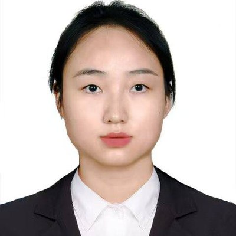

Multimodal Medical Intelligence & Multi-granularity Cognitive Computing Lab
多模态医学智能与多粒度认知计算研究组
多模态医学智能与多粒度认知计算研究组，简称 MAGIC Lab，2024 年由张鹏飞教授创建于成都中医药大学。
研究组依托导师团队与在研项目，面向医学数据处理、大模型、智能计算、针灸多模态、药物发现等方向开展研究，致力于探索中医药数智化过程中的关键技术问题。
我们注重营造开放、协作、求实的科研氛围，为学生提供良好的科研条件与发展平台，鼓励创新思维与实践能力的培养，支持学生在多模态医学智能与多粒度认知计算领域的成长与突破。
面向影像、生理信号与电子病历等异构医学数据，研究清洗、对齐、增强与质量评价等关键方法。
探索医学大模型的领域适配、知识注入与安全可控推理，服务临床问答与辅助决策场景。
发展面向医学任务的高效学习与优化方法，涵盖小样本学习、可信机器学习与计算框架。
结合经络腧穴知识与多模态感知技术，量化研究针灸作用规律，推动针灸的数字化传承。
运用分子表征与生成模型加速虚拟筛选与药物设计，聚焦中医药来源活性分子的智能发现。
MAGIC Lab 创建人 · 成都中医药大学教授
长期从事人工智能与医工交叉领域的研究与教学，主持和参与国家级、省部级科研项目 10 余项，发表学术论文 60 余篇。研究兴趣涵盖多模态医学智能、大模型与中医药数智化。
完整论文列表见负责人学术主页；更多动态请关注「数医智研」微信公众号。
教师 · FACULTY
医学数据处理 · 智能计算 · 自适应光学
长期从事人眼视光学与医工交叉研究，主持四川省自然科学基金一项，参研多项国家级项目。研究兴趣涵盖计算成像、数字图像处理与智能计算。
硕士研究生 · MASTER'S

医学数据处理
医学数据处理 · 大模型 · 药物发现
医学数据处理 · 药物发现
中国人工智能学会会员，参与中药多靶标智筛平台开发，致力于 AI 药物建模、虚拟筛选与多靶标活性预测。
医学数据处理
药物发现
针灸多模态
本科实习生 · UNDERGRADUATE
医学数据处理 · 智能计算
医学数据处理
成员信息持续更新中。
长期欢迎对医学人工智能、大模型、药物发现、针灸多模态感兴趣的同学加入，支持本科实习生、硕士研究生报考与联合培养；也诚邀同行老师开展课题合作、数据共享与学术交流。
请将个人简历与成绩单发送至 zhangpengfei@cdutcm.edu.cn，邮件标题注明「加入MAGIC Lab + 姓名 + 学校/专业」；同行合作请来信说明合作意向与研究背景。
团队动态与论文速递同步发布于公众号「数医智研」，欢迎扫码关注。